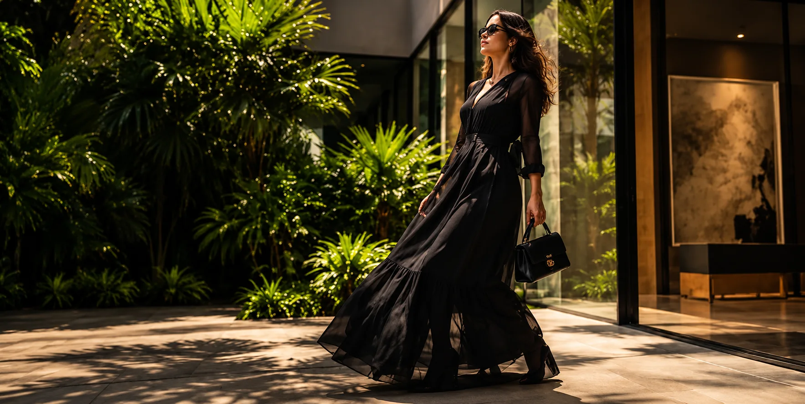
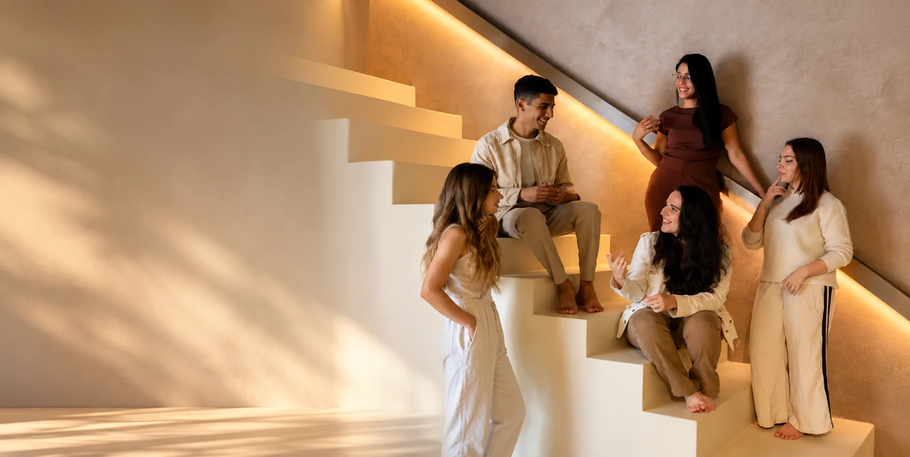

ArteExperiênciaConexões
Mais do que
uma galeria,
um estilo
de vida.
A BE.GALERIA é um espaço onde arte, cultura, moda, negócios e pessoas se encontram.
Conheça nossa galeriaBE.GALERIA

ArquiteturaInterioresProjeto
Projetos que
traduzem
quem você é.
Da planta ao detalhe final, criamos espaços com identidade, pensados para o jeito de viver de cada cliente.
Conheça os projetosBE.GALERIA

EncontrosCulturaComunidade
Onde pessoas
e ideias
se encontram.
Eventos, experiências e conversas que aproximam quem cria, quem vive e quem inspira.
Viva a experiênciaBE.GALERIA
01
03
Arte que
conecta
pessoas